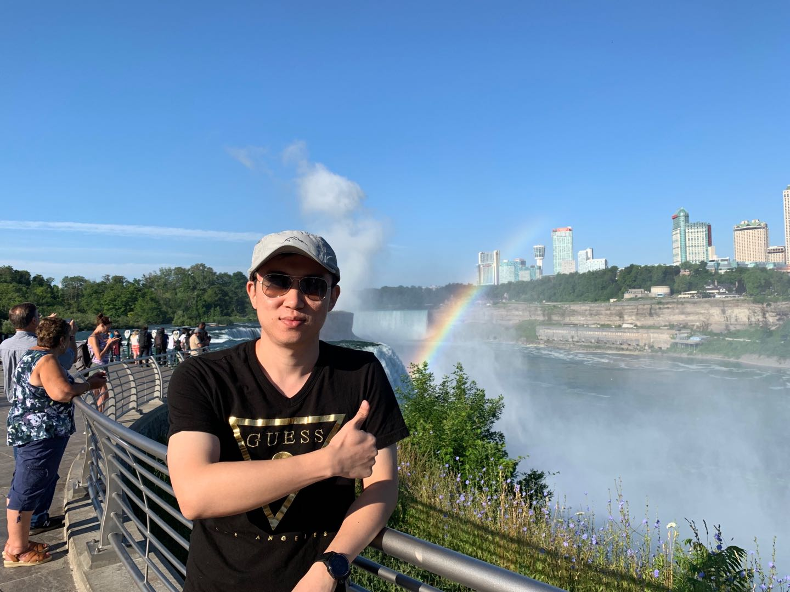

|

Liyan Sun
孙立言
Organization:
Lab of Smart Data and Signal Processing,
Xiamen University
Address:
Room 601, Scientific Research Building
Department of Communication Engineering
Xiamen University
Xiamen, Fujian, China
Email:
sunly@stu.xmu.edu.cn
Google Scholar:
Google Scholar Profile
|
|
I'm currently a fourth year PhD student in Xiamen University, supervised by Prof. Xinghao Ding. Before that, I got the B.Eng degree in Communication Engineering at Zhengzhou University in 2014. From Nov. 2018 to Nov 2019, I was a visiting scholar supervised by Prof. John Paisley in the Data Science Institute at Columbia University.
My research interests include medical image reconstruction, medical image analysis and machine learning.
Now I am looking for a postdoc position.
Publications
2019
-
A 3D Spatially-Weighted Network for Segmentation of Brain Tissue from MRI.
Liyan Sun, Wenao Ma, Xinghao Ding*, Yue Huang, Dong Liang and John Paisley
IEEE Transactions on Medical Imaging(IEEE TMI)
[pdf]
[code]
-
A Deep Information Sharing Network for Multi-contrast Compressed Sensing MRI Reconstruction.
Liyan Sun, Zhiwen Fan, Xueyang Fu, Yue Huang, Xinghao Ding* and John Paisley
IEEE Transactions on Image Processing (IEEE TIP)
[pdf]
[code]
-
Joint CS-MRI Reconstruction and Segmentation with an Unified Deep Network.
Liyan Sun, Zhiwen Fan, Xinghao Ding*, Yue Huang and John Paisley
International Conference on Information Processing in Medical Imaging (IPMI)
[pdf]
[code]
-
An Adversarial Learning Approach to Medical Image Synthesis for Lesion Detection.
Liyan Sun, Jiexiang Wang, Yue Huang, Xinghao Ding*, Hayit Greenspan and John Paisley
IEEE Journal of Biomedical and Health Informatics (IEEE JBHI)
[pdf]
[code]
-
A Divide-and-conquer Approach to Compressed Sensing MRI.
Liyan Sun, Zhiwen Fan, Xinghao Ding*, Congbo Cai, Yue Huang and John Paisley
Magnetic Resonance Imaging (MRI)
[pdf]
[code]
-
Region-of-interest Undersampled MRI Reconstruction: A Deep Convolutional Neural Network Approach.
Liyan Sun, Zhiwen Fan, Xinghao Ding*, Yue Huang and John Paisley
Magnetic Resonance Imaging (MRI)
[pdf]
[code]
-
A Dual-domain Deep Lattice Network for Rapid MRI Reconstruction.
Liyan Sun, Binlin Shu, Xinghao Ding*, Congbo Cai, Yue Huang and John Paisley
Under Review
[pdf]
[code]
-
A Deep Error Correction Network for Compressed Sensing MRI.
Liyan Sun, Zhiwen Fan, Xinghao Ding*, Yue Huang and John Paisley
Under Review
[pdf]
[code]
2018
-
Compressed Sensing MRI Using a Recursive Dilated Network.
Liyan Sun, Zhiwen Fan, Yue Huang, Xinghao Ding* and John Paisley
AAAI Conference on Artificial Intelligence (AAAI)
[pdf]
[code]
-
A Segmentation-aware Deep Fusion Network for Compressed Sensing MRI.
Zhiwen Fan, Liyan Sun, Xinghao Ding*, Yue Huang, Congbo Cai and John Paisley
European Conference on Computer Vision (ECCV)
[pdf]
[code]
-
A Deep Ensemble Network for Compressed Sensing MRI.
Huafeng Wu, Yawen Wu, Liyan Sun, Congbo Cai, Yue Huang and Xinghao Ding*
International Conference on Neural Information Processing (ICONIP)
[pdf]
[code]
2017
-
Compressed Sensing MRI Using Total Variation Regularization with K-space Decomposition.
Liyan Sun, Yue Huang, Congbo Cai and Xinghao Ding*
IEEE International Conference on Image Processing (ICIP)
[pdf]
[code]
2015
-
A Novel Nonlocal MRI Reconstruction Algorithm with Patch-based Low Rank Regularization.
Liyan Sun, Jinchu Chen, Delu Zeng and Xinghao Ding*
IEEE Global Conference on Signal and Information Processing (GlobalSIP)
[pdf]
[code]
-
Patch-based Nonlocal Dynamic MRI Reconstruction with Low-rank Prior.
Liyan Sun, Jinchu Chen, Xiaoping Zhang and Xinghao Ding*
International Workshop on Multimedia Signal Processing (MMSP)
[pdf]
[code]
Friends
Awards
The member of the first-place team in the MR Brain Image Segmentation Challenge MRBrainS13
at MICCAI 2013
The member of the winning team in the 3-classes MR Brain Image Segmentation Challenge MRBrainS18
at MICCAI 2018
Services
|